总要给自己留一点时间，放轻松，摸个鱼。
左右滑动切换页面与翻页，点击选择；长按中键退出应用，右键返回上一级；短按电源键锁屏。
字体、字号、字重、行距、段距与页边距可调；也可换用竖屏 / 横屏 / 竖排 / 倒转四种版式。
整体移植 YanReader 引擎：全拼与九宫格拼音、候选翻页、联想上屏、用户词典自学习。
阅读数据面板记录时长与进度，中断后的每次返回都更从容。
便签、番茄时钟、木鱼敲一敲，随时放松一下。内置小游戏测试中，将在后续版本上线。
右侧小组件（天气 / 老黄历 / 木鱼 / 随心记）长按切换，下方继续阅读下滑换一本。
心知 / 和风 / 彩云任选，首页显示图标、地点与高低温，地点与密钥可随时配置。
Wi-Fi 传书、设备热点、USB 读卡、微信读书，手机和电脑都能传，无需拔卡。
票根 / 壁纸 / 时钟（黄历 · 待办）/ 计算器四种锁屏样式，锁屏密码随手就有。
桌面版 Chrome / Edge 浏览器直连设备写入固件，无需安装任何工具。
请在电脑上使用 Chrome 或 Edge 打开本页，用数据线连接墨水屏后点击连接。
刷机完成后：把 EPUB / TXT 放进 TF 卡 Books/、字体放进 Fonts/（FAT 格式 TF 卡），开一本就能读。详细步骤与排查说明见 刷机指南。
以下均为小纸 Pico 真机实拍。
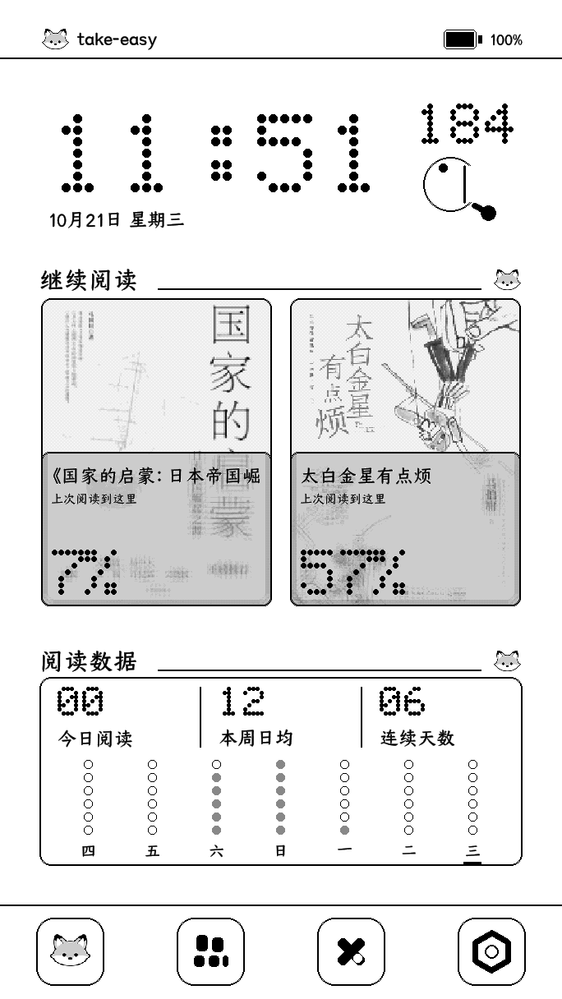
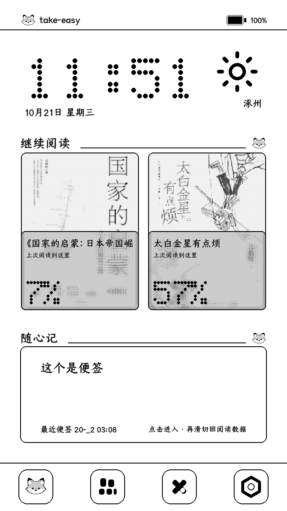
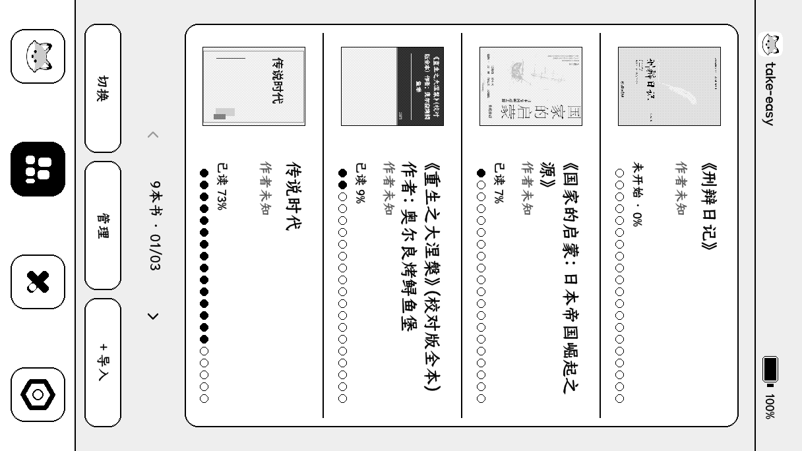
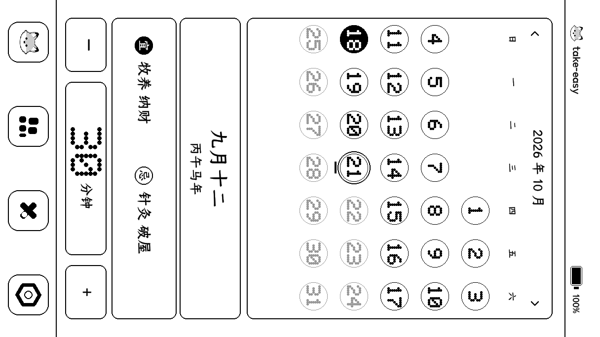
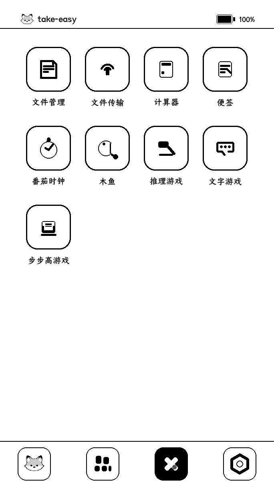
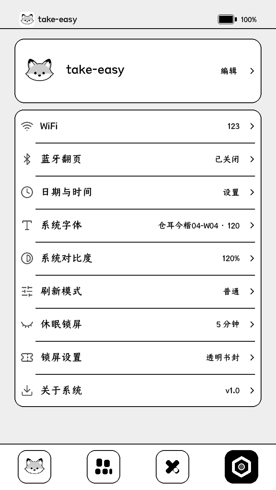
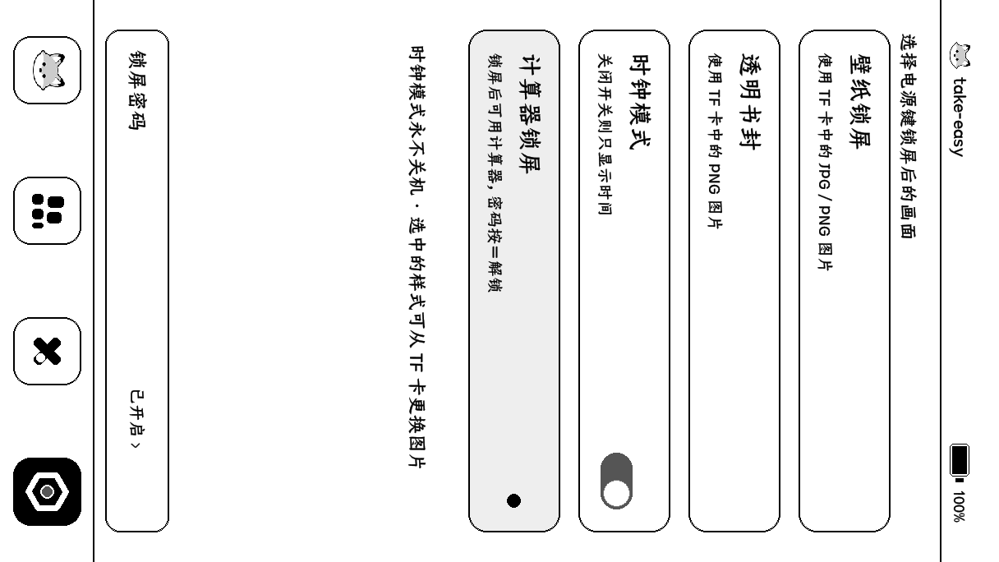
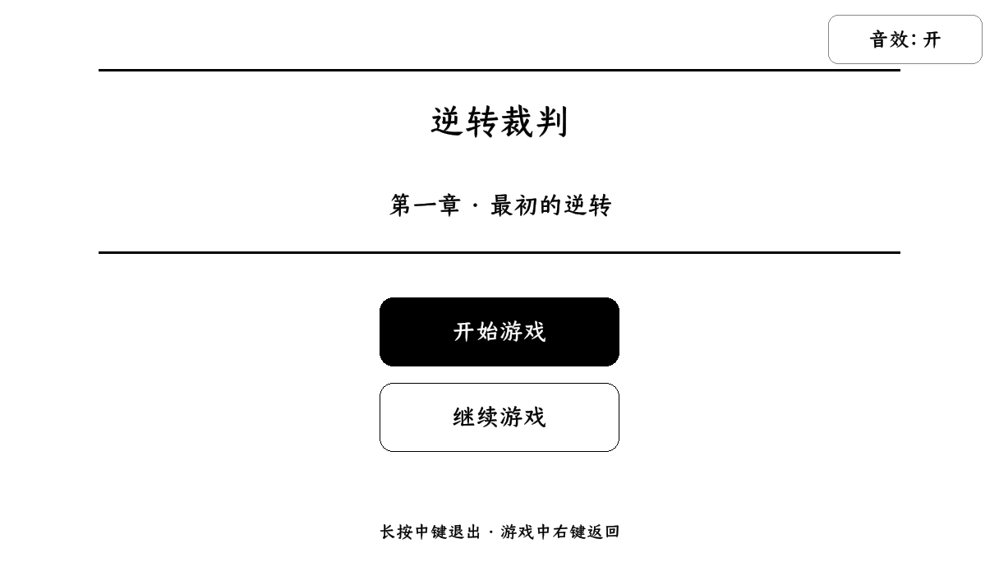
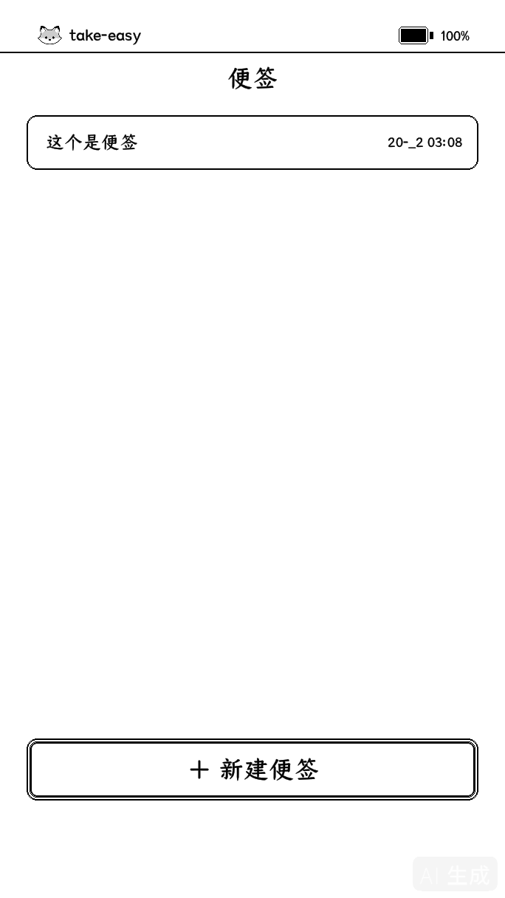
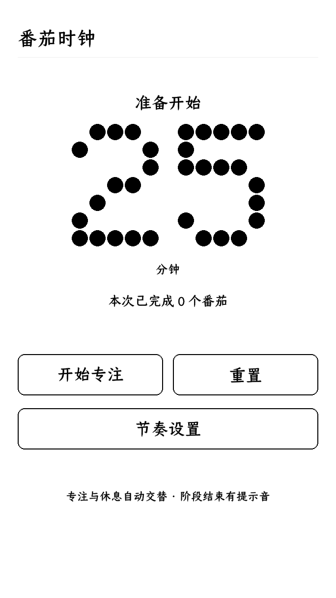
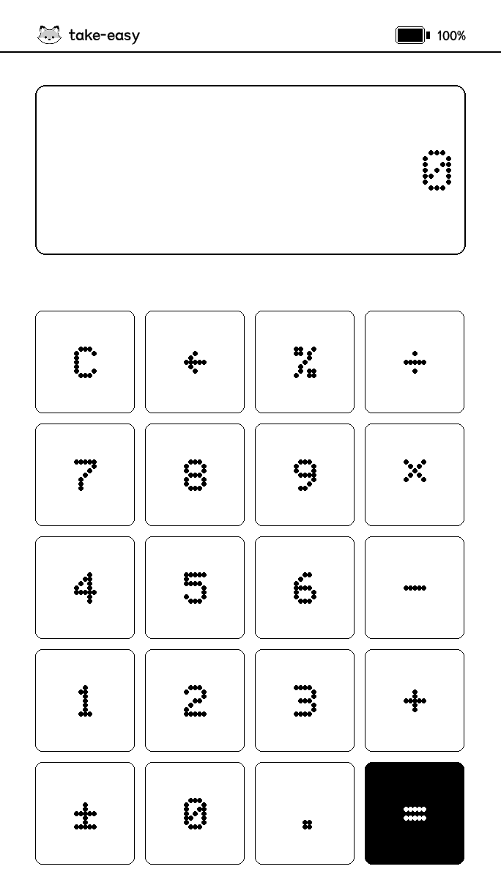
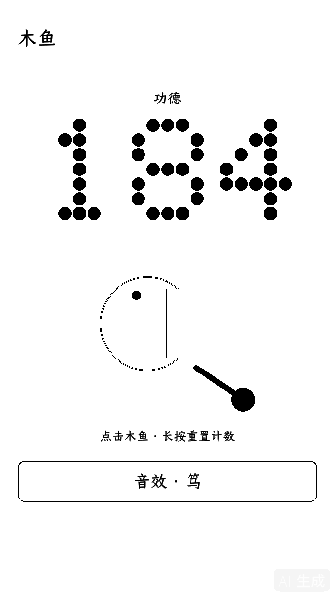